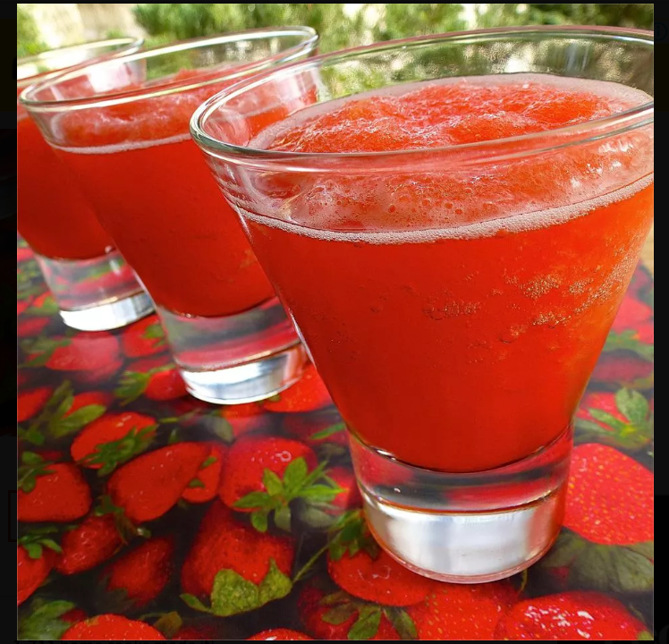

Back to Home
Luscious Slush Punch

This slushie recipe makes the best non-alcoholic punch that both kids
and adults enjoy. Makes enough for two bowls.
This is our Christmas Eve tradition and there is never a drop left!
Ingredients
- 6 cups water
- 2 ½ cups white sugar
- 2 (3 ounce) packages strawberry flavored Jell-O mix
- 1 (46 fluid ounce) can pineapple juice
- ⅔ cup lemon juice
- 1 quart orange juice
- 2 (2 liter) bottles lemon-lime flavored carbonated beverage
Steps
- Bring water, sugar, and strawberry-flavored gelatin
to a boil in a large saucepan; boil for 3 minutes.
Stir in pineapple juice, lemon juice, and orange juice.
- Divide mixture into two separate containers and freeze.
- Combine contents of 1 container frozen juice mixture with
1 bottle lemon-lime flavored carbonated beverage in a punch bowl;
stir until slushy. Repeat with remaining portions as needed.